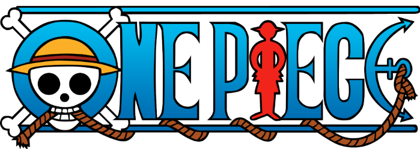
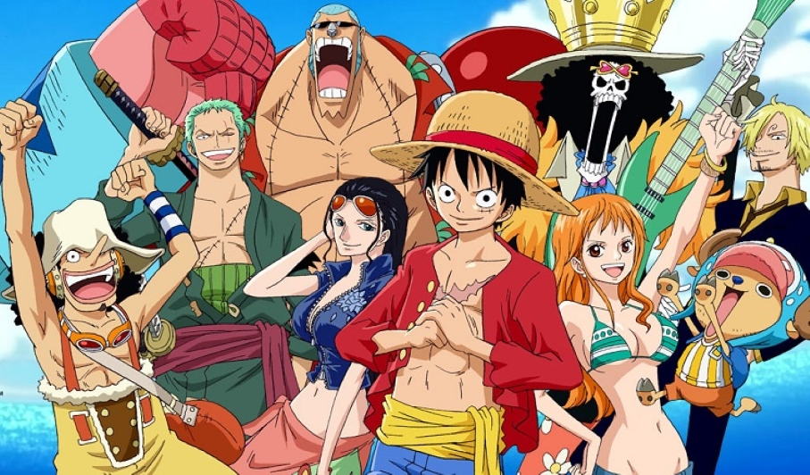
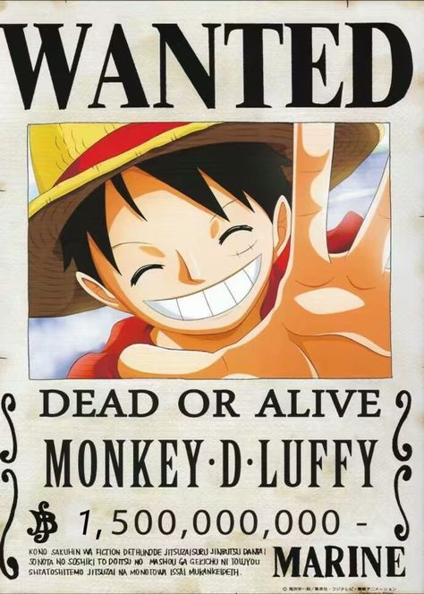

|  | |
TRIPULAÇÃO DO CHAPÉU DE PALHACAPITÃO: Luffy Função no grupo: capitão Luffy é neto de Monkey D. Garp, Vice-Almirante da Marinha e arqui-inimigo de Gol D. Roger, que fez história no mundo como o Rei dos Piratas e o dono original do tesouro One Piece. Ainda assim, desde jovem Luffy quis seguir os passos dos piratas que admirava, como Shanks e o próprio Roger. Ainda criança, ingeriu acidentalmente a Gomu Gomu no Mi, fruta que lhe proporcionou poderes de borracha, habilidades que ele desenvolve consideravelmente no decorrer do anime, desenvolvendo diferentes golpes. Já mais adulto, "Luffy do Chapéu de Palha", como ficou conhecido, fundou sua própria tripulação, os Piratas do Chapéu de Palha. Como capitão da equipe, Luffy percorre a Grand Line recrutando novos membros e enfrentando diferentes inimigos. Tudo isso em busca de alcançar seu sonho de se tornar o novo Rei dos Piratas e encontrar o tesouro One Piece. Neste caminho, o jovem pirata conquistou uma reputação mundial de ser quase insano por já ter atacado as três instalações governamentais mais importantes e escapado com vida. Atualmente, Luffy faz parte do grupo conhecido como "Pior Geração", que reconhece os 12 piratas cujas ousadas ações contra o Governo Mundial lhe renderam uma recompensa acima de $100.000.000. A do Luffy é $1.500.000.000.  |
|
|
Desenvolvido por Lucas Garcia ©Copyright - 2022 |
|